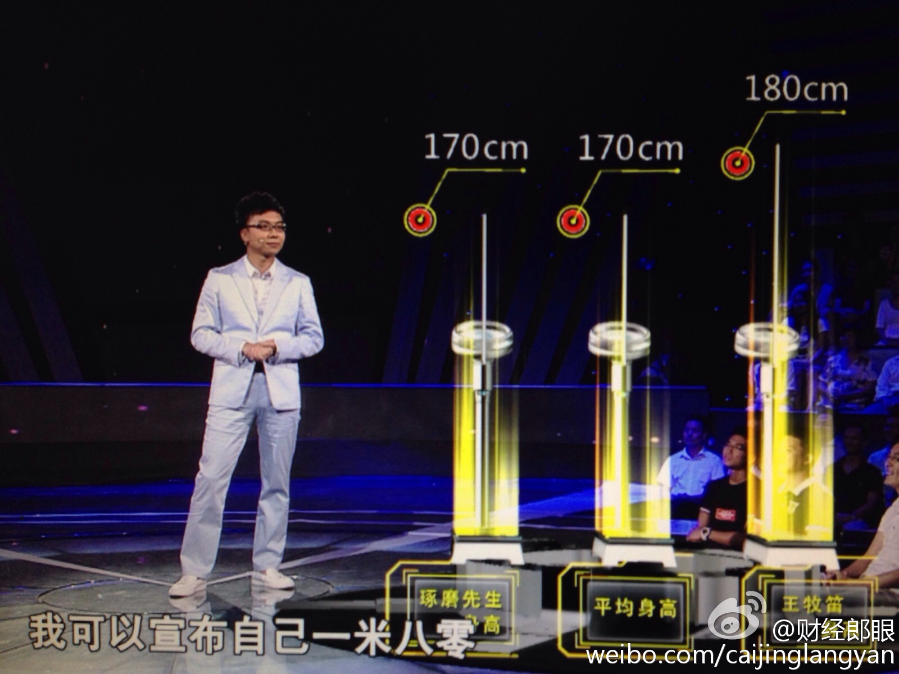

科普贴：德国帝国主义和希腊懒惰人民的斗争嘛。这欧元区，把人家小国耍无赖的机会都弄没了，人家本来一可以让货币贬值，二可以让债券赖着不还。现在它无法让欧元贬值，不还债会让欧洲央行停了货币供应。希腊能做的就是在政治上想办法耍无赖，最终耍到一定程度可以了就收了。没有政治一体化不就得靠耍么@财经郎眼:希腊公投，举世震惊，这是民意的胜利，还是欧盟的失败？希腊是否会从此退出欧元区？谁才是这幕后真正的黑手？今晚21:10广东卫视《财经郎眼》，听@郎咸平 @光远看经济 @王牧笛 跟你聊聊《希腊危机》，一场正在触及生存底线的危机。精彩内容，不容错过！ 